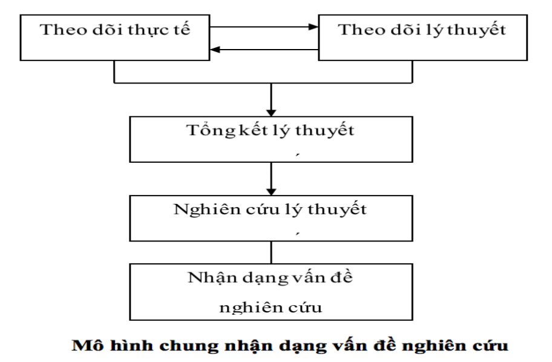
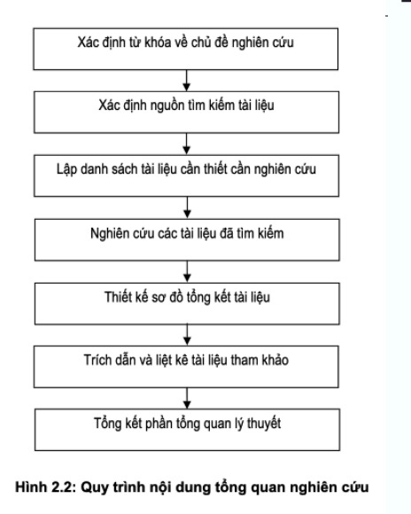
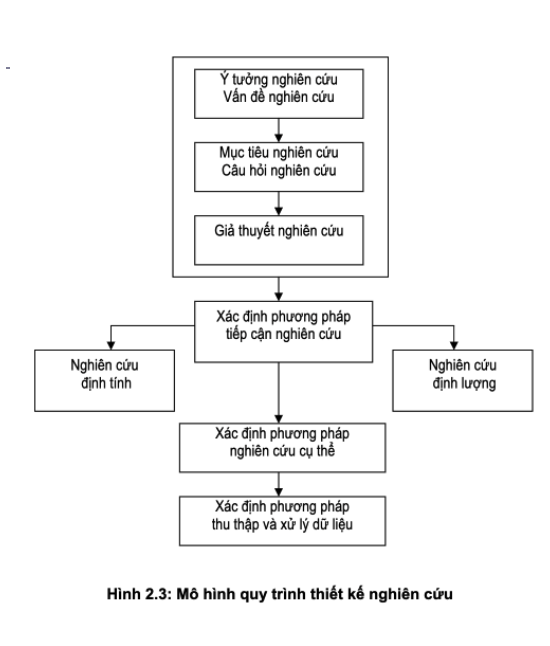
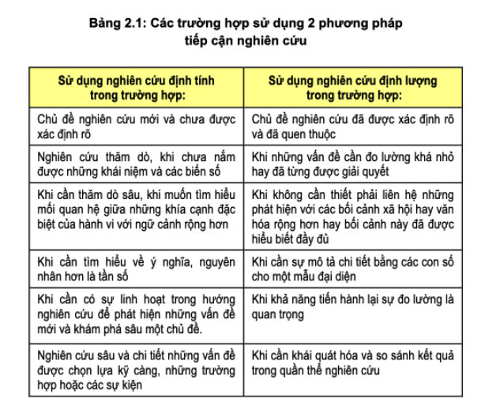
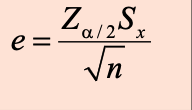

Đề cương phương pháp nghiên cứu khoa học
- chương 1: tổng luận về PPNCKH
- câu 1: nêu khái niệm "nghiên cứu", "khoa học", "nghiên cứu khoa
học", và "phương pháp nghiên cứu khoa học"
- nghiên cứu―thu thập dữ liệu, thúc đẩy tri thức
- khoa học―là hệ thống tri thức (hệ thống tri thức gồm tri thức kinh nghiệm và tri thức từ khoa học)
- Nghiên cứu khoa học―hoạt độngtìm kiếm, phát hiện, xem xét điều tra hay thử nghiệm kiến thức mới, lý thuyết mới,.. về tự nhiên xã hội
- phương pháp nghiên cứu khoa học―quá trình thu thập thông tin và dữ liệu phục vụ ra quyết định nghiên cứu
- câu 2: phân biệt nghiên cứu cơ bản và nghiên cứu ứng dụng, nghiên cứu quy nạp và nghiên cứu diễn
dịch, nghiên cứu định tính và nghiên cứu định lượng
- nghiên cứu cơ bản―là nghiên cứu có hệ thống để tăng sự phát triển tri thức, hiểu biết cơ
bản về hiện tượng, xây dựng, bác bỏ lý thuyết mới, giải thích hiện tượng quan sát được,
sử dụng cho hiện tại hoặc tương lai
- ~Example: nghiên cứu tìm câu trả lời cho cấu hỏi: cấu trúc doanh nghiệp gồm những gì
- nghiên cứu ứng dụng―là nghiên cứu điều tra có hệ thống liên quan
đến việc ứng dụng thực tế của khoa học, mở mang, tìm hiểu kiến
thức, giải quyết các vấn đề của thực tế, nhằm
cải thiện cuộc sống của con người
- ~Example: nghiên cứu biện pháp nâng cao năng suất công việc
- nghiên cứu diễn dịch―suy luận dựa trên việc xây dựng một hay nhiều giả thuyết, đặt giả
thuyết trước thực tế, để đánh giá và giải thích sự thích đáng của giả thuyết
- ~Example: trong sự nghiên cứu của cuộc trò chuyện với người lạ, để đoán xem là nam hay nữ dựa trên những giả thuyết, avt là cách đồng hoa, có màu tím, nhắn tin hợp
- nghiên cứu quy nạp―đưa ra kết luận phỏng đoán dựa trên suy luận từ quy luật lặp lại và
không đổi, quan sát được một số sự việc, rút ra sự tồn tại của sự vật hiện khác không
được chứng minh. nhưng có liên quan đến các sự vật được quan sát trước đó
- ~Example: quan sát đối tượng, quan sát các bạn nữ để phỏng đoán bạn nữ có đặc điểm gì: tóc dài, đen,...
- nghiên cứu định tính ― xây dựng một lý thuyết mới, linh hoạt trong thu thập dữ liệu, phỏng vấn,...
- nghên cứu định lượng ― kiểm định lại một lý thuyết, khó có tính cụ thể, khó có linh hoạt trong thu thập dữ liệu, sử dụng bảng hỏi, có tính chất khách quan hơn...
- nghiên cứu cơ bản―là nghiên cứu có hệ thống để tăng sự phát triển tri thức, hiểu biết cơ
bản về hiện tượng, xây dựng, bác bỏ lý thuyết mới, giải thích hiện tượng quan sát được,
sử dụng cho hiện tại hoặc tương lai
- câu 3: trình bày thứ tự nghiên cứu khoa học của Thietart và cộng sự. phân tích các bước trong
quá trình này
- thứ tự, trình tự nghiên cứu khoa học của thietart và cộng sự
- xác định vấn đề nghiên cứu―là câu hỏi khi gặp phải sự hạn chế của tri thức khoa
học hiện có với sự phát sinh mới của thực tế,
- có 2 trường hợp, nghiên cứu được giao đề tài và nghiên cứu tự phát hiện vấn đề nghiên cứu
- xây dựng luận điểm khoa học―xem sét lịch sử nghiên cứu, sắp xếp công trình đó theo logic, đưa ra các luận điểm đã được giải quyết chưa được giải quyết, cũng làm rõ khái niệm, công cụ liên quan đến đề tài
- chứng minh luận điểm khoa học gồm 3 bộ phận
- luận điểm―là điều cần chứng minh trong nghiên cứu khoa học, nó trả lời cho câu hỏi cần chứng minh điều gì?
- luận cứ―Luận cứ là bằng chứng được đưa ra để chứng minh luận điểm
- phương pháp―cách thức được nhà nghiên cứu sử dụng để tìm kiếm luận cứ và tổ chức chúng một cách logic để chứng minh cho luận điểm
- các phương pháp thu thập dữ liệu
- thu thập số liệu thí nghiệm―là một công việc quan trọng trong nghiên cứu khoa học làm cơ sơ lý luận khoa học hay luận cứ chứng minh giả thuyết hay tìm ra vấn đề cần nghiên cứu
- thu thập dữ liệu từ tham khảo tài liệu―tìm hiểu lịch sử nghiên cứu vấn đề, nắm bắt những nội dung đã được làm rõ để không mất thời gian làm lại các vấn đề đó là tìm hiểu lịch sử nghiên cứu vấn đề, nắm bắt những nội dung người đi trước đã làm, không mất thời gian lặp lại những công việc người đi trước đã thực hiện.
- thu thập từ thực nghiệm―sử dụng trong các ngành khoa học thực nghiệm
- thu thập phi thực nghiệm―Là phương pháp thu thập dữ liệu dựa trên sự quan sát các sự kiện, sự vật đã hay đang tồn tại, từ đó tìm ra qui luật của chúng.
- trình bày luận điểm khoa học―trình bày để người đọc hiểu được
- xác định vấn đề nghiên cứu―là câu hỏi khi gặp phải sự hạn chế của tri thức khoa
học hiện có với sự phát sinh mới của thực tế,
- thứ tự, trình tự nghiên cứu khoa học của thietart và cộng sự
- câu 4: giải thích các thuật ngữ "khái niệm", "định nghĩa", "đối tượng
nghiên cứu", "khách thể nghiên cứu"
- khái niệm―quá trình nhận thức, tư duy bằng quan sát sự thực tác động vào giác quan
- khái niệm gồm là tập hợp tất cả các dấu hiệu làm cơ sở cho việc khái quát hóa và tách riêng ra thành một lớp các đối tượng phản ánh trong khái niệm nội hàm và là tập hợp tất cả các đối tượng có các dấu hiệu nêu trong nội hàm của khái niệm ngoại diên
- định nghĩa―xác định bằng ngôn ngữ nhất định những đặc trưng của
khái niệm, phân biệt nó với các sự vật hiện tượng khác
- nguyên tắc của định nghĩa
- tương xứng
- ngắn ngọn
- rõ ràng không nói theo cách phủ định
- nguyên tắc của định nghĩa
- đối tượng nghiên cứu―là bản chất sự vật hoặc hiện tượng cần được xem xét và làm rõ. trả lời câu hỏi muốn nghiên cứu cái gì
- khách thể nghiên cứu―là hệ thống sự vật, hiện tượng tồn tại khách quan trong các mối liên hệ mà nhà nghiên cứu cần khám phá là vật mang đối tượng nghiên cứu.
- khái niệm―quá trình nhận thức, tư duy bằng quan sát sự thực tác động vào giác quan
- câu 5: biến số nghiên cứu là gì? trình bày các loại biến số nghiên cứu
- biến số― Các sự kiện, hiện tượng, quá trình có đặc trưng là luôn luôn biến đổi. như dân tộc, tuổi,..
- các loại biến số gồm
- biến định tính―hình thành từ những đặc tính không theo thang đo
- biến định lượng―hình thành bằng đơn vị thang đo gắn cho mỗi biến
- trong nhiên cứu thực nghiệm có thể phân loại theo biến độc lập và biến phụ thuộc
- biến độc lập: là các yếu tố, điều kiện khi bị thay đổi trên đối tượng nghiên cứu sẽ ảnh hưởng đến kết quả nghiên cứu.
- biến phụ thuộc: kết quả đo dạc phụ thuộc vào sự thay đổi của biến độc lập.
- câu 6: nêu các sản phẩm nghiên cứu khoa học cơ bản và nội dung cơ bản của mỗi loại
- các sản phẩm nghiên cứu khoa học cơ bản
- khóa luận tốt nghiệp: công trình nghiên cứu của sinh viên để tốt nghiệp
- hình thức:
- Phần mở đầu
- Tổng quan nghiên cứu
- Khung lý thuyết và phương pháp nghiên cứu Kết quả nghiên cứu và thảo luận
- Kết luận và kiến nghị
- Tài liệu tham khảo
- Phụ lục
- hình thức:
- luận văn thạc sĩ:
- bố cục:
- Phần mở đầu
- Tổng quan nghiên cứu
- Những nghiên cứu thực nghiệm hoặc lý thuyết Trình bày, đánh giá, bàn luận kết quả
- Kết luận và kiến nghị những nghiên cứu tiếp theo
- Danh mục công trình công bố của tác giả (nếu có)
- Phụ lục
- bố cục:
- luận án tiến sĩ:
- bố cục:
- Lời cam đoan của tác giả
- Tóm tắt luận án
- Mở đầu
- Tổng quan tình hình nghiên cứu, mục tiêu và nhiệm vụ nghiên cứu
- Cơ sở lý luận và giả thuyết khoa học
- Kết quả nghiên cứu, phân tích và bàn luận kết quả nghiên cứu
- Kết luận và kiến nghị về những nghiên cứu tiếp theo
- Danh mục công trình công bố của tác giả
- Danh mục tài liệu tham khảo
- Phụ lục
- bố cục:
- báo cáo đề tài nghiên cứu khoa học: báo cáo kết quả
- bố cục:
- Mở đầu.
- Chương 1: Tổng quan tình hình nghiên cứu
- Chương 2: Phương pháp nghiên cứu
- Chương 3: Kết quả và thảo luận
- Kết luận và đề nghị
- Danh mục tài liệu tham khảo
- Phụ lục
- bố cục:
- chuyên đề khoa học
- bố cục
- Mở đầu.
- Kết quả nghiên cứu
- Kết luận và kiến nghị
- Tài liệu tham khảo
- Phụ lục
- bố cục
- báo cáo khao học: công bố tạp chí, hội nghị khoa học
- bố cục:
- Tiêu đề: Tên bài báo
- Tác giả
- Địa chỉ thư tín
- Tóm lược
- Giới thiệu
- Phương pháp
- Kết quả
- Thảo luận
- Kết luận và đề nghị
- Cảm tạ
- Tài liệu tham khảo
- bố cục:
- khóa luận tốt nghiệp: công trình nghiên cứu của sinh viên để tốt nghiệp
- các sản phẩm nghiên cứu khoa học cơ bản
- câu 1: nêu khái niệm "nghiên cứu", "khoa học", "nghiên cứu khoa
học", và "phương pháp nghiên cứu khoa học"
- chương 2: thiết kế nghiên cứu
- câu 1: nêu khái niệm về ý tưởng nghiên cứu, trình bày các cơ chế hình thành ý tưởng nghiên cứu
- ý tưởng nghiên cứu―là những ý tưởng ban đầu về vấn đề nghiên cứu, nhà nghiên cứu tiếp tục tìm hiểu để nhận dạng được vấn đề nghiên cứu
- cơ chế ý tưởng nghiên cứu
- cơ chế trực giác―ý tưởng mới xuất hiện đột ngột, xuất hiện như tia chớp, là một hình thức nhảy vọt của tư duy.
- cơ chế phân tích nguyên nhân và hậu quả của vấn đề―phát hiện mâu thuẫn, thiếu
xót
- đề tài thường phân tích các vấn đề, các mâu thuẫn. đề tài là vấn đề khoa học được hình thành do phát hiện mâu thuẫn, thiếu xót của thực tiễn. các thiếu xót này không thể giải quyết bằng tri thức đã có, nên cần nghiên cứu để khám phá, bổ sung
- cơ chế tiếp cận thực tiễn―được thực hiện qua quá trình xâm nhập vào thực tế, tiếp xúc với các nhà hoạt động thực tiễn ⇒ phát hiện những vấn đề gay cấn đòi hỏi giải quyết của khoa học
- câu 2: nêu khái niệm về vấn đề nghiên cứu, trình bày mô hình chung nhận dạng vấn đề nghiên cứu
- vấn đề nghiên cứu―là vấn đề có thực phát sinh trong cuộc sống được nghiên cứu để tìm ra cách thức tốt nhất nhằm giải quyết vấn đề đó.
- nhận dạng nghiên cứu từ 2 nguồn
- từ lý luyết―xác định được những gì nghiên cứu trước đã làm, những gì chưa làm được hoặc chưa hoàn chỉnh ⇒ giúp nhận ra được vấn đề
- từ thực tế―nhận dạng qua những vướng mắc, mâu thuẫn phát sinh trong hoạt động thường ngày ⇒ đạt được mục đích, mong muốn, ước mơ
- mô hình chung
- 
- câu 3: mục đích, mục tiêu và câu hỏi nghiên cứu là gì. nêu mối quan hệ giữa mục tiêu nghiên cứu
và câu hỏi nghiên cứu
- mục đích nghiên cứu
- hướng đến mong muốn mà người nghiên cứu muốn hoàn thành
- trả lời cho câu hỏi mục đích nghiên cứu là gì, phục vụ cái gì? mang ý nghĩa thực tiễn.
- mục tiêu nghiên cứu―là một mục tiêu cụ thể mà nghiên cứu muốn đạt được thông qua việc thu thập và phân tích dữ liệu. mục đích trả lời cho câu hỏi "nhằm vào việc gì"
- câu hỏi nghiên cứu―là phát biểu mang tính bất định về một vấn đề
- mối quan hệ giữa mục tiêu nghiên cứu và câu hỏi nghiên cứu―là rất chặt chẽ, các câu hỏi nghiên cứu được đặt ra để giải quyết vấn đề nghiên cứu hoặc tìm kiếm những tri thức mới để đạt được mục tiêu của nghiên cứu. Mục tiêu nghiên cứu cũng giúp định hướng các câu hỏi nghiên cứu và đảm bảo rằng nghiên cứu sẽ đạt được kết quả mong muốn.
- mục đích nghiên cứu
- câu 4: giả thuyết nghiên cứu là gì, trình bày các dạng thức giả thuyết nghiên cứu
-
giả thuyết nghiên cứu―xuất phát từ câu hỏi nghiên cứu, là một giả định được đưa ra để
kiểm chứng trong quá trình nghiên cứu và đưa ra kết luận về tính chính xác của giả
thuyết đó.
- giải thuyết càng đơn giản càng tốt, có thể được kiểm nghiệm và mang tính khả thi
- dạng thức giả thuyết nghiên cứu
- dạng thức quan hệ nhân - quả―một giả thuyết tốt phải chứa đựng mối quan hệ nhân quả, sử dụng từ ướm thử có thể
- dạng thức nếu - vậy thì―nếu có liên quan tới ⇒ thì nguyên nhân ảnh hưởng đến hậu quả gì
-
giả thuyết nghiên cứu―xuất phát từ câu hỏi nghiên cứu, là một giả định được đưa ra để
kiểm chứng trong quá trình nghiên cứu và đưa ra kết luận về tính chính xác của giả
thuyết đó.
- câu 5: trình bày của khái niệm và vai trò của tổng quan nghiên cứu. nêu quy trình tổng quan
nghiên cứu
- tổng quan nghiên cứu―việc chọn lọc tài liệu được xuất bản hay
không xuất bản, là nghiên cứu làm rõ thông tin, ý tưởng, dữ liệu,
là sự đánh giá kết quả của các tài liệu trên cơ sở liên hệ, so
sánh với nghiên cứu đang thực hiện
- ⇒ tổng quan nghiên cứu cũng là một công trình khoa học cần được thực hiện một cách nghiêm túc và mang tính khoa học cao
- vai trò của tổng quan nghiên cứu
- giúp tiết kiệm thời gian, định vị được nhiên cứu
- nhận dạng được những gì đã làm được, chưa làm được, lựa chọn được phương pháp nghiên cứu
- xây dựng cơ sở lý thuyết vững chắc, tăng kiến thức, làm cơ sở biện luận, so sánh kết quả nghiên cứu
- quy trình tổng quan nghiên cứu ―
-

- xác định từ khóa, chủ đề nghiên cứu
- xác định nguồn tìm kiếm tài liệu
- lập danh sách tài liệu cần thiết cần nghiên cứu
- nghiên cứu các tài liệu đã tìm kiếm
- thiết kết sơ đồ tổng kết tài liệu
- trích dẫn và liệt kê tài liệu tham khảo
- tổng kết phần tổng quan lý thuyết
- tổng quan nghiên cứu―việc chọn lọc tài liệu được xuất bản hay
không xuất bản, là nghiên cứu làm rõ thông tin, ý tưởng, dữ liệu,
là sự đánh giá kết quả của các tài liệu trên cơ sở liên hệ, so
sánh với nghiên cứu đang thực hiện
- câu 6: nêu khái niệm thiết kế nghiên cứu, vẽ mô hình quy trình thiết kế nghiên cứu và phân tích
các hoạt động của quy trình thiết kế nghiên cứu
- thiết kết nghiên cứu―là bản kế hoạch thông qua thu thập, đo lường, phân tích để tìm cách tiếp cận phù hợp và trả lời câu hỏi người nghiên cứu nhằm giải quyết vắn đề gì
- mô hình quy trình thiết kết nghiên cứu và phân tích
- 
- nội dung của thể kế nghiên cứu gồm 5 nội dung chủ yếu―
- xác định ý tưởng nghiên cứu: xác định ý tưởng vấn đề, mục tiêu, câu hỏi và hình thành giả thuyết nghiên cứu
- xác định phương pháp tiếp cận
- phương pháp tiếp cận định lượng―cách tiếp cận liên quan nghên cứu định lượng, thu thập dữ liệu dạng số, nghiên cứu qua biểu đồ, toán thống kê ⇒ tập trung vào kết quả.
- phương pháp tiếp cận định tính―giúp tìm hiểu hành vi, động cơ, ý đồ của đổi tượng nghiên cứu ⇒tập trung vào quá trình.
- 
- xác định phương pháp nghiên cứu cụ thể―nghiên cứu tình huống, lý thuyết,
nhân học, hành động, thực nghiệm và mô tả
- phương pháp tiếp cận định tính dùng cho thực nghiệm và mô tả
- phương pháp tiếp cận định lượng dùng cho nghiên cứu tình huống, lý thuyết, nhân học, hành động
- xác định phương pháp thu thập và xử lý dữ liệu: kĩ thuật nào sẽ được sử
dụng để thu thập dữ liệu, làm thế nào để chứng minh dữ liệu thu thập
được là đáng tin cậy
- phương pháp khảo sát―dùng bảng hỏi, sử dụng trong định lượng, thu thập mẫu nhỏ đại diện cho tổng thể mẫu
- phương pháp quan sát―thu thập qua ghi chép, mô tả, phân tích
- phỏng vấn―dùng chủ yếu trong nghiên cứu định tính, đánh giá nhận thức, ý nghĩa của một người, nhóm người
- dữ liệu thứ cấp―qua các văn bản, tiểu sử, thông báo chính phủ
- thiết lập thời gian
- câu 7: nêu các tiêu chí phân loại thiết kế nghiên cứu. phân biệt giữa nghiên cứu khám phá,
nghiên cứu mô tả, nghiên cứu nhân quả
- phân loại thiết kế nghiên cứu
- phân loại theo khả năng kiểm soát biến
- nghiên cứu thực nghiệm
- nghiên cứu đa biến
- phân loại theo mục đích nghiên cứu
- nghiên cứu khám phá
- nghên cứu mô tả
- nghiên cứu nhân quả
- phân loại theo độ dài thời gian nghiên cứu
- nghiên cứu thời điểm
- nghiên cứu giai đoạn
- phân loại theo phạm vi
- nghiên cứu thống kê
- nghiên cứu tình huống
- phân loại theo môi trường
- nghiên cứu trong điều kiện thực tế
- nghiên cứu trong điều kiện phòng thí nghiệm
- phân loại theo phương pháp nghiên cứu
- nghiên cứu định tính
- nghên cứu định lượng
- nghiên cứu hỗn hợp
- phân loại theo khả năng kiểm soát biến
- phân biệt nghiên cứu khám phá, nghiên cứu mô tả và nghiên cứu nhân quả
- nghiên cứu khám phá―dùng khi vấn đề nghiên cứu còn khó
hiểu, chưa rõ ràng vấn đề nghiên cứu còn mới hoặc lý thuyết
chưa rõ ràng hoặc bản thân người nghiên cứu có ít hiểu biết về
vấn đề nghiên cứu
- ví dụ: nghiên cứu về doanh thu bán hàng của công ty A giảm sút chưa rõ nguyên nhân
- nghên cứu mô tả―dùng khi vấn đề nghiên cứu quen thuộc, đã xác định rõ ràng ⇒
định lượng
- ví dụ: nghiên cứu nhu cầu sử dụng mạng xã hội hàng ngày của sinh viên trường Thương Mại
- nghiên cứu nhân quả―dùng khi vấn đề nghiên cứu đã xác định, cần làm rõ
mối quan hệ nhân quả, mức độ và liều lượng tác
động giữa các yếu tố dùng cả định lượng, định tính.
- nghiên cứu mối quan hệ giữa điều kiện sống với sự phát triển tri thức
- nghiên cứu khám phá―dùng khi vấn đề nghiên cứu còn khó
hiểu, chưa rõ ràng vấn đề nghiên cứu còn mới hoặc lý thuyết
chưa rõ ràng hoặc bản thân người nghiên cứu có ít hiểu biết về
vấn đề nghiên cứu
- phân loại thiết kế nghiên cứu
- câu 8: thiết kế nghiên cứu định tính là gì. nêu các căn
cứ lựa chọn thiết kế nghiên cứu định tính, lấy ví dụ minh họa
- thiết kế nghiên cứu định tính―được dựa trên phương pháp nghiên cứu định tính để thu thập, đo lường và phân tích dữ liệu nhằm trả lời cho các câu hỏi nghiên cứu
- căn cứ lựa chọn thiết kế nghiên cứu định tính
- sự phù hợp giữa vấn đề và cách tiếp cận nghiên cứu: cần tìm hiểu lý thuyết, hiện tượng mà nghiên cứu khác chưa có, giải thích các vấn đề mà không biết các biến số để xem xét
- kinh nghiệm cá nhân: vấn đề hình thức viết văn chương, phân tích, kinh nghiệm phỏng vấn
- độc giả
- ví dụ: Nghiên cứu về ý kiến của sinh viên về chất lượng dịch vụ của trường đại học Thương Mại
- câu 9: thiết kế nghiên cứu định lượng là gì. nêu căn cứ
lựa chọn thiết kế nghiên cứu định lượng, lấy ví dụ minh họa
- thiết kế nghên cứu định lượng―Là thiết kế được dựa trên phương pháp nghiên cứu định lượng là chủ yếu, thường được sử dụng để kiểm định lý thuyết
- căn cứ lựa chọn thiết kế nghiên cứu định lượn―
- sự phù hợp giữa vấn đề và cách tiếp cận nghiên cứu: nhận diện được các yếu tố ảnh hưởng đến kết quả, sử dụng biện pháp can thiệp
- kinh nghiệm cá nhân: khả năng phân tích bằng số liệu, có quy trình rõ ràng, tìm đến lựa chọn sáng tạo
- độc giả
- ví dụ: Nghiên cứu về mối liên hệ giữa việc tập thể dục và sức khỏe của người trưởng thành
- câu 10: thiết kế nghiên cứu hỗn hợp là gì. nêu các căn
cứ lựa chọn thiết kế nghiên cứu hỗn hợp
- thiết kế nghiên cứu hỗn hợp―Là thiết kế được dựa trên cả 2 phương pháp nghiên cứu định tính và định lượng, bao gồm các dạng kết hợp như thiết kế hỗn hợp đa phương pháp, thiết kế hỗn hợp gắn kết, thiết kế hỗn hợp giải thích, thiết kế hỗn hợp khám phá.
- căn cứ lựa chọn thiết kế nghiên cứu hỗn hợp―
- sự phù hợp giữa vấn đề và cách tiếp cận nghiên cứu:
- kinh nghiệm cá nhân: phù hợp với những người thích cả định lượng và định tính,...
- độc giả
- ví dụ: Nghiên cứu về ảnh hưởng của quảng cáo trên truyền thông truyền thống và truyền thông kỹ thuật số đến mức độ nhận thức của khách hàng về sản phẩm của công ty Apple
- câu 1: nêu khái niệm về ý tưởng nghiên cứu, trình bày các cơ chế hình thành ý tưởng nghiên cứu
- chương 3: nghiên cứu định tính
- câu 1: nêu các phương pháp sử dụng trong nghiên cứu định tính. phân tích phương pháp nghiên cứu
tình huống và phương pháp nghiên cứu tài liệu
- các phương pháp sử dụng trong nghiên cứu định tính
- phương pháp lý thuyết nền
- phương pháp nghiên cứu tình huống
- phương pháp nghiên cứu tài liệu
- phương pháp khác như: dân tộc học, hiện tượng học,...
- phân tích phương pháp nghiên cứu tình huống và phương pháp nghiên cứu tài liệu
- phương pháp nghiên cứu tình huống―phương pháp nghiên cứu chi tiết và kỹ càng về
một tình huống hoặc vấn đề cụ thể, thường được áp dụng trong các lĩnh vực như
kinh doanh, giáo dục, y tế, luật pháp... Phương pháp này cho phép nhà nghiên cứu
tập trung vào việc nghiên cứu một trường hợp duy nhất hoặc một số ít các trường
hợp, để từ đó đưa ra những kết luận và khuyến nghị cho tình huống đó.
- được sử dụng khi nghiên cứu trả lời cho câu hỏi tại sao, như thế nào
- nhà nghiên cứu không thể bắt trước được hành vi của người được nghiên cứu, ranh giới giữa hiện tượng và tình huống hoàn cảnh đặt ra không rõ ràng
- quy trình xây dựng lý thuyết tình huống
- Bước 1: xác định câu hỏi nghiên cứu.
- Bước 2: Lựa chọn tình huống
- Bước 3: Chọn công cụ và phương pháp thu thập dữ liệu.
- Bước 4: Tiến hành thu thập dữ liệu tại hiện trường.
- Bước 5: Phân tích dữ liệu
- Bước 6: Thiết lập các giả thuyết
- Bước 7: So sánh với lý thuyết
- Bước 8: Kết luận
- phương pháp nghiên cứu tài liệu―là phương pháp nghiên cứu dựa trên việc thu
thập, phân tích và đánh giá các tài liệu liên quan đến chủ đề nghiên cứu, chẳng
hạn như sách, báo cáo, bài báo, tài liệu hội nghị, văn bản pháp lý... Phương
pháp này cho phép nhà nghiên cứu tìm hiểu sâu về chủ đề nghiên cứu và đưa ra
những kết luận dựa trên cơ sở khoa học và chính xác. có thể sử dụng độc lập hoặc
kết hợp với các phương pháp khác
- ưu điểm: nguồn dữ liệu hiệu quả, không mất nhiều thời gian, chi phí
- hạn chế: tài liệu có thể không đầy đủ chi tiết thông tin, việc tiếp cận còn khó khăn
- phương pháp nghiên cứu tình huống―phương pháp nghiên cứu chi tiết và kỹ càng về
một tình huống hoặc vấn đề cụ thể, thường được áp dụng trong các lĩnh vực như
kinh doanh, giáo dục, y tế, luật pháp... Phương pháp này cho phép nhà nghiên cứu
tập trung vào việc nghiên cứu một trường hợp duy nhất hoặc một số ít các trường
hợp, để từ đó đưa ra những kết luận và khuyến nghị cho tình huống đó.
- các phương pháp sử dụng trong nghiên cứu định tính
- câu 2: nêu các công cụ thu thập dữ liệu định tính. phân tích công cụ phỏng vấn sâu, thảo luận
nhóm, quan sát, sử dụng thông tin có sẵn trong thu thập dữ liệu định tính
- công cụ thu thập dữ liệu định tính
- phỏng vấn sâu
- thảo luận nhóm
- quan sát
- sử dụng thông tin có sẵn
- phân tích các công cụ phỏng vấn
- Phỏng vấn sâu―một phương pháp thu thập dữ liệu định tính thông qua việc hỏi và
trao đổi với người tham gia nghiên cứu.
- Ưu điểm của phỏng vấn sâu―cho phép tìm hiểu sâu hơn về quan điểm, nhận thức, trải nghiệm của người tham gia nghiên cứu.
- nhược điểm của phỏng vấn sâu―mất thời gian và tốn kém về chi phí.
- Thảo luận nhóm―là phương pháp thu thập dữ liệu định tính thông qua việc thảo
luận và tranh luận giữa các thành viên trong nhóm.
- Ưu điểm của thảo luận nhóm―là cho phép thu thập ý kiến và quan điểm của nhiều người tham gia cùng lúc, tạo ra sự đa dạng và sâu sắc trong dữ liệu thu thập.
- nhược điểm của thảo luận nhóm―là khó kiểm soát và đánh giá độ chân thật của dữ liệu thu thập được.
- công cụ quan sát―là phương pháp thu thập dữ liệu định tính thông qua việc quan
sát và ghi chép các hành vi và sự kiện trong một tình huống nghiên cứu.
- Ưu điểm của công cụ quan sát―là cho phép thu thập dữ liệu trong môi trường tự nhiên và tạo ra sự trung thực trong dữ liệu thu thập được.
- nhược điểm của công cụ quan sát―là có thể bỏ sót những thông tin quan trọng và khó kiểm soát các yếu tố bên ngoài có thể ảnh hưởng đến quá trình quan sát.
- Sử dụng thông tin có sẵn―là phương pháp thu thập dữ liệu định tính thông qua
việc sử dụng các tài liệu, hồ sơ, báo cáo hoặc dữ liệu đã được thu thập trước
đó.
- Ưu điểm của thông tin có sẵn―là nhanh chóng và tiết kiệm chi phí, đồng thời cho phép nghiên cứu trong những trường hợp mà thu thập dữ liệu mới là không khả thi.
- nhược điểm của công cụ có sẵn―là dữ liệu có sẵn có thể không đầy đủ hoặc không phù hợp với mục đích nghiên cứu.
- Phỏng vấn sâu―một phương pháp thu thập dữ liệu định tính thông qua việc hỏi và
trao đổi với người tham gia nghiên cứu.
- công cụ thu thập dữ liệu định tính
- câu 3: nêu các bước trong quá trình nghiên cứu định tính. phân tích các bước trong quy trình này
- quy trình nghiên cứu định tính
- xác định nghiên cứu:
- khám phá vấn đề nghiên cứu
- xác định vấn đề nghiên cứu
- xây dựng mô hình nghiên cứu
- kiểm nghiệm
- phân tích dữ liệu
- kết luận
- quy trình nghiên cứu định tính
- câu 4: nêu nguyên tắc chọn mẫu trong nghiên cứu định tính. phân tích các phương pháp chọn mẫu
trong nghiên cứu định tính
- nguyên tắc chọn mẫu trong nghiên cứu định tính
- kích thước mẫu: thông tin thu thập cho đến khi không còn dấu hiệu mới thì dừng lại
- chất lượng mẫu quyết định đến chất lượng của quá trình nghiên cứu
- số lượng mẫu nhỏ, tác động của những sai lệch khi chọn mẫu với kết quả là lớn
- các phương pháp chọn mẫu trong nghiên cứu định tính
- chọn mẫu theo phương pháp mục đích
- tiến hành: dựa trên suy nghĩ chủ quan của nhà nghiên cứu
- ưu điểm: tìm được đối tượng chọn mẫu nhanh, thuận tiện, đúng mục đích
- nhược điểm: dựa trên tính chủ quan ⇒ chất lượng mẫu mang tính chủ quan, kém tính khách quan, nếu nhà nghiên cứu không có kinh nghiệm ⇒ có thể chọn dữ liệu sai
- áp dụng trong trường hợp nào: áp dụng đề tài mà nhà nghiên cứu thông thuộc, có kinh nghiệm trong nhiều năm.
- chọn mẫu theo chỉ tiêu
- tiến hành: dựa trên các đặc tính của chủ thể để thu thập dữ liệu
- ưu điểm: cải thiện được tính cải thiện, khách quan nhất trong các pp chọn mẫu của nghiên cứu định tính
- nhược điểm: phải tìm được đặc tính để phân chia cho phù hợp
- áp dụng trong trường hợp nào: áp dụng hầu hết các nghiên cứu định tính
- chọn mẫu theo quả bóng tuyết
- tiến hành: tiếp cận các đối tượng ban đầu sau đó nghiên cứu đối tượng có đặc điểm tương tự thông qua sự giới thiệu của các nghiên cứu trước đó
- ưu điểm: tiếp cận được những đối tượng khó tiếp cận hoặc những tình huống khó thực hiện , phù hợp trong những trường hợp cần tìm kiếm những thông tin mới hoặc hiếm gặp.
- nhược điểm: khó đảm bảo tính đại diện mẫu do dựa vào sự giới thiệu của những người đã được lựa chọn, có thể xảy ra hiện tượng lặp thông tin, quan điểm, không đảm bảo tính ngẫy nhiên
- áp dụng trong trường hợp: với những trường hợp khó tiếp cận, những đề tài mang tính chất nhạy cảm với xã hội (chính trị, xã hội) vd: người bị phạm tội, trẻ vị thành niên, chính trị gia,...
- chọn mẫu theo phương pháp mục đích
- nguyên tắc chọn mẫu trong nghiên cứu định tính
- câu 5: trình bày tóm tắt quy trình phân tích dữ liệu trong nghiên cứu định tính. nêu tên một đề
tài có thể sử dụng phương pháp nghiên cứu định tính
- quy trình chọn mẫu trong nghiên cứu định tính
- mã hóa dữ liệu: dùng để nhận dạng các dữ liệu, mô tả dữ liệu và tập hợp các dữ liệu được thực hiện bằng ngôn từ, hình ảnh; phân chia các câu, các đoạn dữ liệu ... giúp nhà nghiên cứu có được cái nhìn tổng quát về dữ liệu, khám phá được các khái niệm nghiên cứu, làm cơ sở để xây dựng khái niệm và lý thuyết.
- tạo nhóm thông tin: mục đích nhằm phân tích mối quan hệ giữa các nhóm thông tin. Nhà nghiên cứu tiến hành so sánh để có thể phát triển các chủ đề và các chủng loại thông tin.
- kết nối dữ liệu: mục đích so sánh kết quả quan sát với kết quả mong đợi, giải thích khoảng cách giữa 2 loại kết quả nếu có. nhà nghiên cứu cần xem kỹ lại để tìm sự giống và khác nhau, sắp xếp hợp từ đó phát triển mô hình, khái quát thành lý thuyết
- đề tài có thể sử dụng trong nghiên cứu định tính―Nghiên cứu đánh giá ý kiến của sinh viên về chất lượng dịch vụ của trường đại học Thương Mại
- quy trình chọn mẫu trong nghiên cứu định tính
- câu 1: nêu các phương pháp sử dụng trong nghiên cứu định tính. phân tích phương pháp nghiên cứu
tình huống và phương pháp nghiên cứu tài liệu
- chương 4: nghiên cứu định lượng
- câu 1: khái niệm nghiên cứu định lượng.
- nghiên cứu định lượng―là một quy trình nghiên cứu chính thức, khách quan, có hệ thống các dữ liệu số để kiểm định mối quan hệ, liên hệ nhân quả
- câu 2: nghiên cứu định lượng có các loại phương pháp chủ yếu gì. lấy ví dụ minh họa
- phương pháp khảo sát―nhằm
tìm kiếm các tri thức khoa học, kiểm định một mô hình lý thuyết, có thể sử dụng các
mẫu điều tra không mang tính đại diện
- ví dụ: nghiên cứu các nhân tố tác động đến quyết định làm việc của sinh viên Thương Mại
- phương pháp thăm dò―nhằm
tìm hiểu ý kiến của người trả lời về một vấn đề nào đó (các cuộc thăm dò dư luận, ý
định bỏ phiếu, điều tra xã hội học,...)
- ví dụ: nghiên cứu về thói quen sử dụng điện thoại di động của người dùng
- phương pháp khảo sát―nhằm
tìm kiếm các tri thức khoa học, kiểm định một mô hình lý thuyết, có thể sử dụng các
mẫu điều tra không mang tính đại diện
- câu 3: phân tích quy trình nghiên cứu định lượng
- quy trình nghiên cứu định lượng
- xác định khe hở nghiên cứu ⇒ xác định câu hỏi nghiên cứu từ các vấn đề vướng mắc hay còn tồn tại trong thực tiễn hay các tài liệu trước đó
- tổng quan nghiên cứu ⇒ nghiên cứu các tài liệu có liên quan ⇒ lập mô hình, giả thuyết nghiên cứu
- xác định phương pháp nghiên cứu ⇒ chọn mẫu, bảng hỏi điều tra, thu thập dữ liệu
- kết quả nghiên cứu ⇒ kết quả phân tích dữ liệu, diễn giải
- trao đổi, bàn luận ⇒ soi lại lý thuyết, đóng góp,..
- quy trình nghiên cứu định lượng
- câu 4: thế nào là dữ liệu sơ cấp, ưu và nhược điểm. dữ liệu sơ cấp gồm những loại gì
- dữ liệu sơ cấp―tự
mình thu thập dữ liệu cho phù hợp với vấn đề nghiên cứu đặt ra
- các loại dữ liệu sơ cấp
- dữ liệu chưa có sẵn―dữ liệu đã có trong thực tế nhưng chưa ai thu thập
- dữ liệu không có trong thực tế―dữ liệu chưa tồn tại trong thực tế, cần thiết kế các thử nghiệm phù hợp để tạo ra và thu thập dữ liệu
- ưu điểm dữ liệu sơ cấp―độ chính xác cao, đảm bảo tính cập nhật, kịp thời, là nguồn dữ liệu duy nhất mà nhà nghiên cứu có thể có được.
- nhược điểm dữ liệu sơ cấp―đòi hỏi kĩ thuật cao, phức tạp, thời gian công sức
- các loại dữ liệu sơ cấp
- dữ liệu sơ cấp―tự
mình thu thập dữ liệu cho phù hợp với vấn đề nghiên cứu đặt ra
- câu 5: thế nào là dữ liệu thứ cấp. ưu và nhược điểm của dữ liệu thứ cấp, dữ liệu thứ cấp gồm
những loại gì
- dữ liệu thứ cấp―dữ
liệu có sẵn, do người khác thu thập, sử dụng cho mục đích nghiên cứu khác
- các dữ liệu trong các bài báo, công trình nghiên cứu, tạp chí, sách,..
- dữ liệu thứ cấp gồm
- tài liệu
- dữ liệu đa nguồn
- dữ liệu điều tra, khảo sát
- ưu điểm của dữ liệu thứ cấp
- nhược điểm của dữ liệu thứ cấp
- dữ liệu thứ cấp―dữ
liệu có sẵn, do người khác thu thập, sử dụng cho mục đích nghiên cứu khác
- câu 6: phân biệt dữ liệu sơ cấp và dữ liệu thứ cấp
- phân biệt dữ liệu sơ cấp và thứ cấp #table90
- khái niệm
- dữ liệu thứ cấp
- dữ liệu có sẵn, do người khác thu thập, được sử dụng trong nghiên cứu khác
- dữ liệu sơ cấp
- dữ liệu thứ cấp
- tính sẵn có tại thời điểm thu thập
- có sẵn
- chưa có sẵn
- chi phí
- thấp hơn
- cao hơn
- thời gian
- nhanh hơn
- lâu hơn
- phương pháp
- nghiên cứu các tài liệu bên trong và ngoài
- nghiên cứu qua khảo sát, quan sát,..
- khái niệm
- phân biệt dữ liệu sơ cấp và thứ cấp #table90
- câu 7: nêu các khái niệm cơ bản trong chọn mẫu: đám đông, phần từ, mẫu, đơn vị mẫu, hiệu quả
chọn mẫu, sai số trong chọn mẫu. tại sao cần phải chọn mẫu
- đám đông―Là tập hợp toàn bộ các đối tượng cần được nghiên cứu
- phần tử―Là đối tượng cần thu thập dự liệu hay còn gọi là đối tượng nghiên cứu
- mẫu―là một tập hợp nhỏ hơn được rút ra từ đám đông
- đơn vị mẫu―Các phần tử được chọn để tham gia vào mẫu.
- khung mẫu―Là danh sách liệt kê tất cả các đơn vị và phẩn tử của đám đông
- hiệu quả chọn mẫu―Độ chính xác của mẫu đại diện cho đám đông.
- sai số trong chọn mẫu―Độ chênh lệch giữa kết quả mẫu và kết quả thực tế của đám đông.
- cần thiết phải chọn mẫu vì
- đảm bảo tính khả thi của nghiên cứu
- nhà nghiên cứu có thể sử dụng các công cụ thống kê suy diễn như ước lượng, kiểm định.
- ngân sách không đủ cho việc nghiên cứu tổng thể
- chọn mẫu giúp cho kết quả được chính xác hơn
- câu 8: nêu các phương pháp chọn mẫu ngẫu nhiên (xác suất)
- phương pháp chọn mẫu ngẫu nhiên―là phương pháp chọn mẫu mà khả năng được lựa chọn vào mẫu của tất cả các phần thử trong thu thập dữ liệu là như nhau
- bao gồm
- ngẫu nhiên đơn giản: Là phương pháp chọn các đơn vị mẫu từ đám đông một cách ngẫu nhiên và độc lập với nhau. đảm bảo mỗi đơn vị mẫu có cơ hội được chọn và tính đại diện của mẫu.
- ngẫu nhiên hệ thống: là phương pháp các đơn vị mẫu được chọn theo một quy luật nhất định từ đám đông. được sử dụng khi đám đông được sắp xếp theo một trật tự nhất định. đều đặn, ví dụ như danh sách khách hàng được lưu trữ theo thứ tự chữ cái hoặc theo tháng năm.
- phân tầng: là phương pháp mà đám đông được chia thành các nhóm dựa trên một số đặc điểm chung, sau đó chọn một số đơn vị mẫu từ mỗi nhóm. Mục đích là để đảm bảo tính đại diện của mẫu cho từng nhóm và giảm sai số.
- theo cụm: là phương pháp đám đông được chia thành các cụm và chọn một số cụm để nghiên cứu. Mỗi cụm được chọn được xem như một đơn vị mẫu và tất cả các đơn vị trong cụm đều được bao gồm trong mẫu. Phương pháp này thường được sử dụng khi đám đông rộng lớn và phân tán.
- câu 9: nêu các phương pháp chọn mẫu phi ngẫu nhiên
- phương pháp chọn mẫu phi ngẫu nghiên―là phương pháp các phần tử có thể không có khả năng ngang nhau để được chọn vào mẫu
- các loại phương pháp chọn mẫu phi ngẫu nghiên
- phương pháp chọn mẫu thuận tiện: chọn mẫu thuận tiện là cách mà ta có thể chọn những phần tử ta có thể tiếp cận cho đến khi đủ kích thước
- phương pháp chọn mẫu phán đoán: tự phán đoán sự thích hợp của các phần tử được chọn vào mẫu
- phương pháp chọn mẫu định mức: dựa vào đặc tính kiểm soát của đám đông để chọn số phần tử sao cho mẫu chúng có cùng tỉ lệ
- phương pháp quả cầu tuyết: ban đầu thực hiện chọn mẫu ngẫu nhiên, sau đó nghiên cứu thông qua các phần tử đó để giới thiệu các phần tử tiếp theo cho mẫu đến khi được kích thước mẫu như ta mong muốn
- câu 10: phân tích quy trình chọn mẫu, cách xác định kích thước mẫu
- quy trình chọn mẫu
- xác định đám đông: Xác định đối tượng nghiên cứu và đám đông mà đối tượng đó thuộc về.
- xác định khung mẫu: liệu kê các dữ liệu, thông số cần thiết cho chọn mẫu
- xác định kích thước mẫu: Xác định số lượng đơn vị mẫu cần thiết để đạt được kết quả nghiên cứu mong muốn và giới hạn chi phí và thời gian thu thập dữ liệu.
- xác định phương pháp chọn mẫu: Chọn phương pháp lấy mẫu phù hợp với đặc điểm của đám đông và mục tiêu nghiên cứu.
- tiến hành chọn mẫu
- xác định kích thước mẫu (cỡ mẫu)
- xác định cỡ mẫu theo chuẩn mực cơ bản
- kích thước mẫu tối thiểu 30 (n≥ 30) đảm bảo cho các phân tích thông kê thông thường có ý nghĩa
- kích thước mẫu tối đa nhỏ hơn 1/7 và tỷ lệ mẫu trung bình là 1/10
- xác định cỡ mẫu để ước lượng trung bình tổng thể
- 
- e = Mức độ chính xác
- n = Cỡ mẫu
- Z a/ 2 = Giá trị của biến phân phối chuẩn hóa ở mức ý nghĩa anphal
- anphal = Mức ý nghĩa (thường được chọn ở mức 0,05)
- Sx = Độ lệch chuẩn của mẫu
- xác định cỡ mẫu theo chuẩn mực cơ bản
- quy trình chọn mẫu
- câu 1: khái niệm nghiên cứu định lượng.
- câu 11: bản chất của đo lường khái niệm nghiên cứu là gì
- Bản chất của việc đo lường khái niệm trong nghiên cứu là quá trình đánh giá và gán giá trị số lượng hoặc chất lượng cho các khái niệm được xác định trước đó trong nghiên cứu. có thể đo lường bằng số, thang đo, phân tích nội dung nhằm đảm bảo tính chính xác và độ tin cậy của dữ liệu thu thập đựo
- Ví dụ, nếu một nghiên cứu muốn đo lường sự hài lòng của khách hàng đối với sản phẩm, phương pháp đo lường có thể là một cuộc khảo sát trực tuyến với câu hỏi mức độ hài lòng của khách hàng từ 1 đến 5.
- Một yếu tố quan trọng của đo lường khái niệm trong nghiên cứu là tính chính xác và độ tin cậy của kết quả đo lường để giúp tăng tính hợp lý và đáng tin cậy của các kết quả nghiên cứu.
- Bản chất của đo lường khái niệm nghiên cứu là quá trình sử dụng các phương pháp và công cụ nhất định để đo lường và ghi nhận các giá trị hoặc số liệu liên quan đến các khái niệm trong nghiên cứu. Việc đo lường khái niệm nghiên cứu có thể được thực hiện bằng các phương pháp khác nhau, nhưng đều nhằm đảm bảo tính chính xác và độ tin cậy của dữ liệu thu thập được.
- câu 12: có những cấp độ thang đo nào trong đo lường khái niệm nghiên cứu
- thang đo định tính: định danh và thứ tự, còn định lượng là thang đo cấp quãng, thang đo cấp tỉ lệ
- thang đo cấp định danh: dùng số do để xếp loại, không có ý nghĩa về lượng
- thang đo cấp thứ tự: dùng số đo để so sánh thứ tự, không có ý nghĩa về lượng
- thang đo cấp quãng: các con số đưa ra có khoảng, thể hiện rõ số lượng
- thang đo cấp tỷ lệ: dùng số đo để đo độ lớn, các con số hoặc lựa chọn đưa ra ngoài việc xác định được khoảng cách, còn tính được tỷ lệ để so sánh, thể hiện rõ số lượng
- câu 13: hãy nêu một số vấn đề trong thiết kế bảng hỏi định lượng: định khung bảng hỏi, xem xét
thứ tự các câu hỏi và soạn thảo câu hỏi
- một số vấn đề trong thiết kế bảng hỏi
- Định khung bảng hỏi: Việc xác định thành phần và số lượng các câu hỏi, loại phép đo, phạm vi thời gian và mục tiêu của nghiên cứu.
- Xem xét thứ tự các câu hỏi: Thứ tự các câu hỏi trong bảng hỏi định lượng có thể ảnh hưởng đến câu trả lời của người tham gia khảo sát. Do đó, nó cần được định cấu trúc hợp lý để tránh bất kỳ sai sót hoặc thiên lệch nào.
- Soạn thảo câu hỏi: Câu hỏi trong bảng hỏi định lượng cần phải rõ ràng, dễ hiểu và tránh sử dụng ngôn ngữ không chính xác hoặc mập mờ. xác định thứ tự các câu hỏi: từ đơn giản đến phức tạp, từ khái quát đến cụ thể
- một số vấn đề trong thiết kế bảng hỏi
- câu 14: phân tích nội dung của nhập và chuẩn bị dữ liệu trong thu thập dữ liệu định lượng
- nhập và chuẩn bị dữ liệu trong nghiên cứu định lượng
- xử lý sơ bộ bảng câu hỏi: xử lý, loại bỏ các sai sót trong quá trình thu thập dữ liệu: câu hỏi phức tạp, không rõ ràng, người phỏng vấn thiếu kinh nghiệm, câu trả lời không đảm bảo chất lượng
- mã hóa dữ liệu: mã hóa câu trả lời dưới dạng con số theo đúng con số đưa ra trong quá trình thu thập dữ liệu, với câu hỏi định tính thì gán tự số theo quy ước thông qua các phần mềm như Excel,..
- nhập dữ liệu: Trước khi nhập dữ liệu, cần đánh số thứ tự các bảng câu hỏi thu được để tiện việc kiểm tra sau này. Bảng dữ liệu hoàn chỉnh sẽ là một ma trận trong đó: Mỗi cột biểu thị một biến và mỗi dòng biểu thị thông tin của một người trả lời.
- làm sạch dữ liệu: là bước cuối cùng nhằm tiếp tục phát hiện những sai sót trong việc thu thập và nhập dữ liệu
- nhập và chuẩn bị dữ liệu trong nghiên cứu định lượng
- câu 15: phân tích các nội dung chủ yếu của xử lý dữ liệu định lượng: thống kê mô tả, phân tích
nhân tố, phân tích độ tin cậy thang đo, phân tích hồi quy tuyến tính
- Thống kê mô tả: Là phương pháp sử dụng các số liệu thống kê để mô tả và tổng hợp dữ liệu. Các số liệu thống kê mô tả thường bao gồm giá trị trung bình, độ lệch chuẩn, phân vị và tần số.
- Phân tích nhân tố: Là phương pháp sử dụng để khám phá các mối quan hệ giữa các biến trong tập dữ liệu. Phân tích nhân tố giúp xác định các nhóm biến tương tự nhau và giảm kích thước của bộ dữ liệu.
- Phân tích độ tin cậy thang đo: Là phương pháp sử dụng để đánh giá độ tin cậy của thang đo sử dụng trong nghiên cứu. đánh giá độ ổn định và độ nhất quán của các thang đo bằng cách tính toán các hệ số tin cậy như Cronbach Alpha: hệ số biến-tổng < 0,3, chọn thang đo khi có độ tin cậy alpha > 0,6 theo nunally và burnmstarin, 1994; nguyễn đình thọ, nguyễn thị mai trang, 2009
- Phân tích hồi quy tuyến tính: được sử dụng để phân tích mối quan hệ giữa hai biến độc lập và phụ thuộc. Nó giúp đánh giá mức độ tương quan giữa các biến và dự đoán giá trị của biến phụ thuộc dựa trên giá trị của các biến độc lập.
- câu 1: trình bày cấu trúc một báo cáo nghiên cứu khoa học
- cấu trúc một bài báo cáo nghiên cứu khoa học
- tiêu đề, tên bài báo, tên đề tài
- tóm lược
- phần 1: đặt vấn đề: giới thiệu tổng quan về nghiên cứu, mục đích, động lực, phạm vi và cấu trúc báo cáo.
- phần 2: cơ sở lý thuyết, tổng quan tài liệu: trình bày các nghiên cứu liên quan đến lĩnh vực nghiên cứu, đưa ra các khái niệm cơ bản, lý thuyết, các mô hình và giải pháp đã được đưa ra trước đó.
- phần 3: phương pháp nghiên cứu: rình bày chi tiết về phương pháp nghiên cứu, bao gồm thiết kế nghiên cứu, phương pháp thu thập dữ liệu, phương pháp phân tích dữ liệu và các công cụ nghiên cứu.
- phần 4: kết quả nghiên cứu: trình bày kết quả của nghiên cứu dưới dạng bảng biểu, đồ thị hoặc chú thích. Nó cần phản ánh chính xác và đầy đủ các dữ liệu và phân tích kết quả của nghiên cứu.
- phần 5: kết luận: Phần này trình bày kết quả chính của nghiên cứu, đưa ra những kết luận
- phần 6: kiến nghị, hàm ý: đưa ra những giải pháp hữu ích, cũng như những hạn chế của nghiên cứu và đề xuất cho các nghiên cứu tiếp theo
- tài liệu tham khảo
- cấu trúc một bài báo cáo nghiên cứu khoa học
- câu 2: những điểm chú ý về văn phong sử dụng trong báo cáo nghiên cứu khoa học
- văn phong sử dụng trong nghiên cứu khoa học
- Tránh sử dụng ngôn ngữ lóng tiếng, ngôn ngữ thường ngày hoặc ngôn ngữ địa phương trong báo cáo nghiên cứu khoa học.
- Sử dụng câu văn ngắn gọn, đơn giản và tránh sử dụng câu văn quá dài, phức tạp.
- Sử dụng các phép so sánh, định lượng, bảng biểu, đồ thị, hình ảnh, v.v. để minh họa, giải thích rõ ràng cho các kết quả nghiên cứu.
- Sử dụng ngôn ngữ trung tính, tránh sử dụng ngôn ngữ mang tính chủ quan, nhận xét mang tính tuyệt đối (chắn chắn, cần phải,..), đảm bảo tính khách quan và khoa học của báo cáo.
- văn phong sử dụng trong nghiên cứu khoa học
- câu 3: các cách trích dẫn nguồn tài liệu tham khảo trong nghiên cứu khoa học
- cách trích dẫn tài liệu tham khảo trong nghiên cứu khoa học
- trích dẫn nguyên văn: dùng dấu "" với đoạn trích ít hơn 2 câu, nếu nội dung trích dẫn nhiều, đoạn độc lập lùi 2cm cả trái và phải với đoạn khác
- trích dẫn qua tài liệu tham khảo
- ghi theo thứ tự tài liệu trong mục tài liệu tham khảo, với các tài liệu tham khảo có nhiều tác giả thì sử dụng tên tác giả đầu và cụm từ "và các tác giả khác",
- nội dung trong trích dẫn: Tác giả 1 và Tác giả 2 (năm xuất bản). Tựa đề. Địa chỉ xuất bản,...
- cách trích dẫn tài liệu tham khảo trong nghiên cứu khoa học
©Duc Nhan
Ducnhan.info@gmail.com